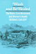
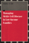

No longer active.
Health, Society and Policy, edited by Sheryl Ruzek and Irving
Kenneth Zola, takes a critical stance with regard to health policy
and medical practice, ranging broadly in subject matter. Backlist
titles include books on the legal and professional status of midwifery,
the experience and regulation of kidney transplants, the evolution
of federal law on architectural access, and a political/ethical
argument for making the community responsible for universal access
to health care. |

|
The
Health of the Republic
Epidemics, Medicine, and Moralism as Challenges to Democracy
Beauchamp, Dan E. 312 pp • Fall 1988
paper 978-0-87722-729-8
cloth 978-0-87722-558-4 |

|
Pathways
from Heroin Addiction
Recovery Without Treatment
Biernacki, Patrick 268 pp • Spring 1986
cloth 978-0-87722-410-5 |

|
Schooling
Without Labels
Parents, Educators, and Inclusive Education
Biklen, Douglas 210 pp • Fall 1991
paper 978-0-87722-876-9
cloth 978-0-87722-875-2 |

|
Wash
and Be Healed
The Water-Cure Movement and Women's Health
Cayleff, Susan E. 257 pp • Spring 1987
paper 978-0-87722-859-2
cloth 978-0-87722-462-4
Excerpt available |

|
Final
Negotiations
A Story of Love, and Chronic Illness
Ellis, Carolyn 368 pp • 6x9 • Fall
1994
paper 978-1-56639-271-6
cloth 978-1-56639-270-9
Excerpt available |

|
Abandoned
to Their Fate
Social Policy and Practice Toward Severely Retarded People in
America, 1820-1920
Ferguson, Philip M. 232 pp • 5.5x8.25
• Spring 1994
cloth 978-1-56639-154-2 |

|
Women
with Disabilities
Essays in Psychology, Culture, and Politics
edited by Fine, Michelle and Adrienne Asch 347
pp • 6x9 • Fall 1987
paper 978-0-87722-669-7
cloth 978-0-87722-474-7
Excerpt available |

|
A
World without Words
The Social Construction of Children Born Deaf and Blind
Goode, David, foreword by Irving Kenneth Zola 336
pp • 5.5x8.25 • Fall 1994
paper 978-1-56639-216-7
cloth 978-1-56639-215-0
Excerpt available |

|
Managing
Sickle Cell Disease in Low-Income Families
Hill, Shirley A. 240 pp • 5.5x8.25 •
Spring 2003
paper 978-1-59213-195-2
Excerpt available |

|
Sexual
Cultures and the Construction of Adolescent Identities
edited by Irvine, Janice M. 336 pp •
6x9 • Spring 1994
paper 978-1-56639-136-8
cloth 978-1-56639-135-1
Excerpt available |

|
The
Regulation of Sexuality
Experiences of Family Planning Workers
Joffe, Carole 208 pp • Fall 1987
paper 978-0-87722-510-2
cloth 978-0-87722-423-5 |

|
Understanding Breast Cancer Risk
Kelly, Patricia T. 195 pp • Spring 1991
paper 978-0-87722-813-4
cloth 978-0-87722-812-7 |

|
Day
In, Day Out with Alzheimer's
Stress in Caregiving Relationships
Lyman, Karen A. 264 pp • 5.5x8.25 •
Fall 1993
paper 978-1-56639-098-9
cloth 978-1-56639-097-2 |

|
Talking
Health with Dr. Brian McDonough
edited by McDonough, M.D., Brian P. 264 pp
• 6x9 • Fall 1994
cloth 978-1-56639-207-5 |

|
Dangerous
Passage
The Social Control of Sexuality in Women's Adolescence
Nathanson, Constance A. 304 pp • Spring
1991
paper 978-1-56639-077-4
cloth 978-0-87722-824-0 |
|
Borrowed
Time
Artificial Organs and the Politics of Extending Lives
Plough, Alonzo L. 195 pp • Spring 1986
cloth 978-0-87722-415-0 |

|
The
Caring Relationship
Elderly People and Their Families
Qureshi, Hazel and Alan Walker 287 pp •
Fall 1989
cloth 978-0-87722-663-5 |

|
Science
that Colonizes
A Critique of Fertility Studies in Africa
Riedmann, Agnes 192 pp • 6x9 • Spring
1993
cloth 978-1-56639-042-2 |

|
Women
Resisting AIDS
Feminist Strategies of Empowerment
edited by Schneider, Beth E. and Nancy E. Stoller 352
pp • 6x9 • Fall 1994
paper 978-1-56639-269-3
cloth 978-1-56639-268-6 |

|
From
Good Will to Civil Rights
Transforming Federal Disability Policy
Scotch, Richard K. 232 pp • 5.5x8.25
• Spring 2001
paper 978-1-56639-897-8
cloth 978-1-56639-896-1
Excerpt available |

|
Centuries
of Solace
Expressions of Maternal Grief in Popular Literature
Simonds, Wendy and Barbara Katz Rothman 390
pp • 5.5x8.25 • Spring 1992
cloth 978-0-87722-931-5 |

|
A
Case About Amy
Smith, R. C., foreword by Frank G. Bowe 344
pp • 6x9 • Spring 1996
paper 978-1-56639-412-3
cloth 978-1-56639-411-6
Excerpt available |
|
Tough
Choices
In Vitro Fertilization and the Reproductive Technologies
edited by Stephenson, Patricia and Marsden G. Wagner 192
pp • 5.5x8.25 • Fall 1993
cloth 978-1-56639-060-6 |

|
The
Disabled State
Stone, Deborah A. 256 pp • Fall 1984
paper 978-0-87722-362-7
cloth 978-0-87722-359-7 |

|
Engineering
Disability
Public Policy and Compensatory Technology
Tanenbaum, Sandra J.
184 pp • Spring
1986
cloth 978-0-87722-403-7 |

|
The
Feel of Silence
Tucker, Bonnie Poitras, foreword by Frederic Hafferty 232
pp • 6x9 • Fall 1995
paper 978-1-56639-352-2
cloth 978-1-56639-351-5
Excerpt available |
|
Cocaine
Changes
The Experience of Using and Quitting
Waldorf, Dan, Craig Reinarman and Sheigla Murphy 336
pp • 5.5x8.25 • Fall 1991
paper 978-1-56639-013-2
cloth 978-0-87722-863-9 |